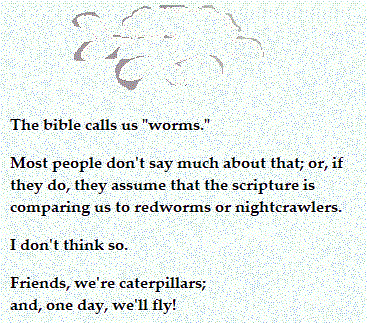
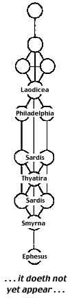

Angels on the Rise
As mere mortals in this present: made to be a little lower than the immortal angels because of our incursion into time, with its mortality, we cool the immortal fires of angels within the temporal fires of Earth, invoking the Eternal Fire of the Angel of the Presence for solace, friendship, and remedy. And cry out we do! Each of us pleads his case, consciously or not; for our faces-- the expressions inherent in our faculties behold the Faces of the heavenly Father, continually; and our spirits cast their crowns before the Throne of Heaven and plead for understanding, accompanied by the twenty-four perfected Elders, asking, "How long?!"
ImmanuAL has hidden in the hearts of mankind from the beginning, suffering every pain and indignity as he prepares our angels for eternal life. Specs of dust, here below, we are being readied to hold focus on the faces of the Father as we navigate the whirls of galactic planets and stars in the dynamics of a universe in the throes of Creation, its many mansions being readied for our coming as Sons of Man.
As ImmanuAL has hidden in the thick darkness of human hearts since the Garden expulsion, so long ago, so we have hidden beneath the folds of the Father's wings, drawing from our covering courage to face the uproars of mortal life, day after day and round after round. Yes, we live and die as men incarnated in specks of dark dust; but where dust is, Light becomes visible. And so, under the Father's watchful care across the millennia, we develop into pearls of great price.
The Adam fashioned out of clay received the star seed of the Father's Breath, and the second Adam was the first to carry that Breath to full term: not by his birth in Bethlehem, the House of Battle, but through overcoming in the prayer-closet isolation of the wilderness subsequent to his immersion by John Baptist. Having yet to overcome before his water baptism, he didn't go into the wilderness to get his life in order, but to lay it down; for it was in the wilderness that he overcame the temptations of logical pathways to mastery. In the secrecy of the temple made without hands, he sacrificed all inward ambition and strife on the altar of the Father's inward presence. Having made this acceptable offering, he became the lynchpin of the age of the gospels, calling upon each of us to follow in his footsteps on the path that leads to perfection and eternal Life.
{kind=link}
It's the Father that clothes us. Our success or failure in the trajectories of our natural lives are the Father's doing, not our own. We make gestures, which are accepted, or not. Y'shua, Firstborn of the Spirit, witnessed that he, by himself, could do nothing: not good, nor bad, but nothing! To continue in the delusion that we are in control of our lives is to make ourselves our own saviors, parting the Son's garments among ourselves as we see fit, by aligning ourselves not with the Whole, but with whatever attributes we fancy. Thus, we fall into darker and darker dimensions, crucifying the Lord of Glory in our own bodies.
When, again, the Father takes upon himself to draw our attention to the Son's forgiving knocks at our hearts, we recognize the scarlet stain of our sins; and we realize that our eyes sometimes become blind to revelation, and that our ears sometimes become deaf to instruction, imprisoning us in the strange land of our vulnerabilities.
Do not despair of receiving forgiveness after such falling away. God's mercy abides: it is without end; and there shall be a way of escape. God is not mocked; and as we shall be given, we shall call upon the Father's name in the position of the Son; and we will begin, again, to set aside our shackles the four-hundred ninety-first time, to find ourselves welcomed with open arms at an Ephesus we better understand, in continuation of our journey home.
The joy at finding ourselves in Ephesus is great; for we taste, again, of our origins, having been brought near by the outpouring of grace. However, we supposed that the vistas of this new land in Asia were equal to those of Y'SharAL; and we became overjoyed beyond reason, forgetting yet again the measurement of our first love. As we lost ourselves to celebration, our focus blurred; our hearing became intermittent; and the Projection of Yah became as a friend remembered, rather than an ever-present companion.
The falling away-- at Ephesus or at Laodicea-- brings waves of accusation; but wherever sin abounds, grace shall triumph, because HaShem is both Author of our faith and also its Finisher. He does all thins well. Should we fall away yet again, therefore, the tender mercies of HaShem shall cushion our downward momentum, beginning to lift us up again, even as we continue in error.